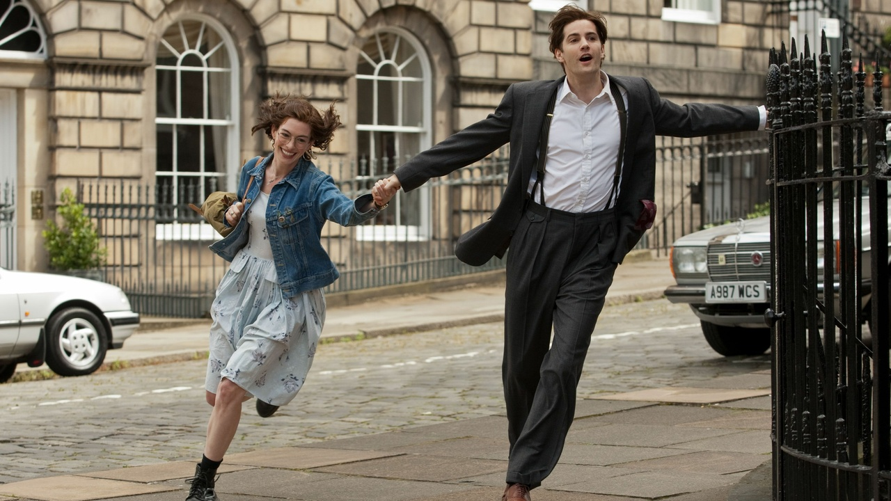

Siempre es el mismo dia Emma (Hathaway) y Dexter (Sturgess) se conocen el dia de
su graduacion universitaria, un 15 de julio. Ella es una chica idealista de clase trabajadora,
el en cambio es un joven rico con ganas de comerse el munso. Durante veinte años, cada 15 de
julio se muestra su vida cotidiana y lo extraordinaria que es su amistad. Porfin, un dia se dan cuenta
de lo que habian estado buscando durante años lo tenian ante si